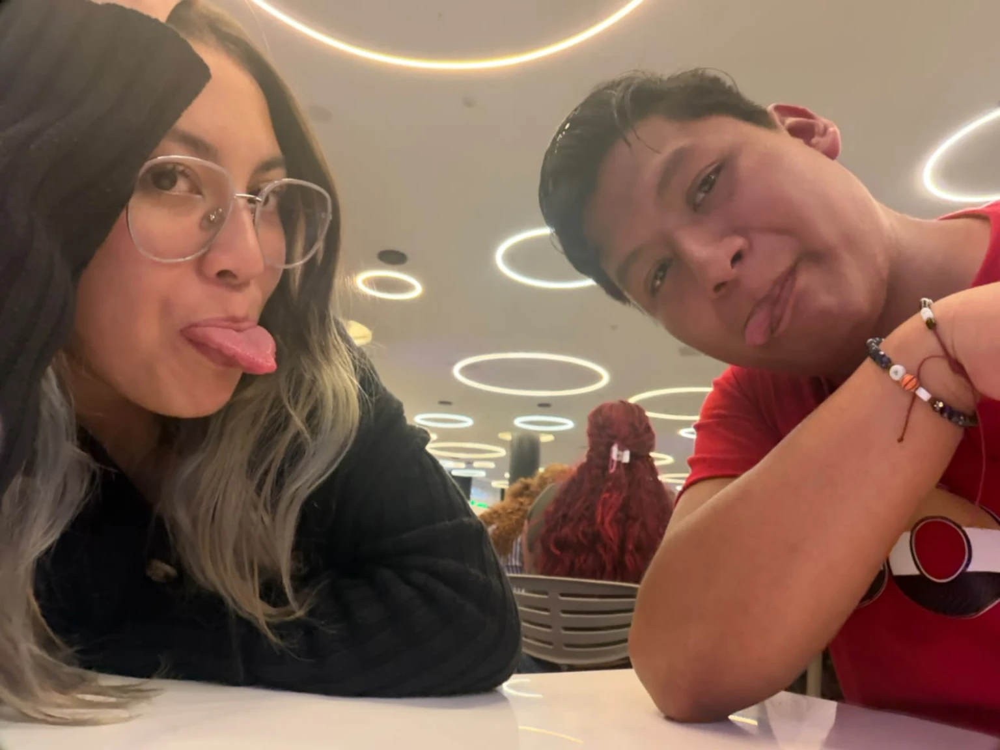
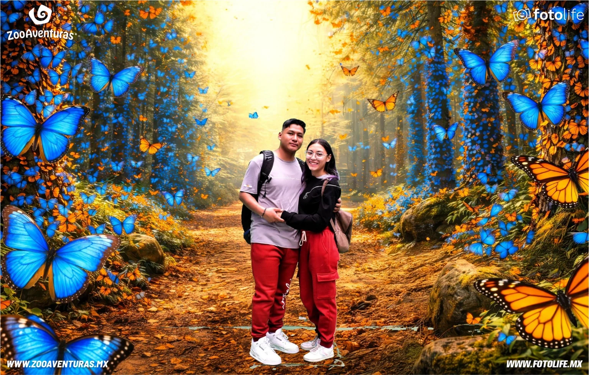
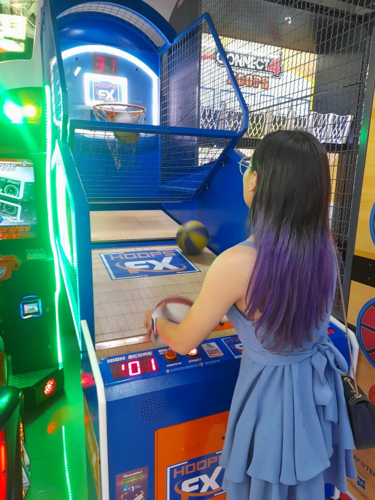
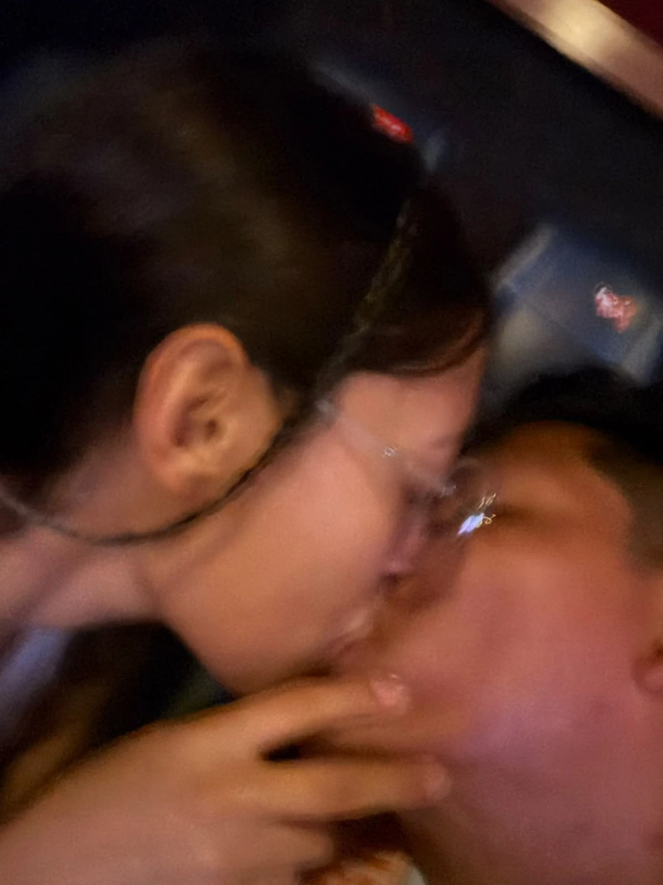
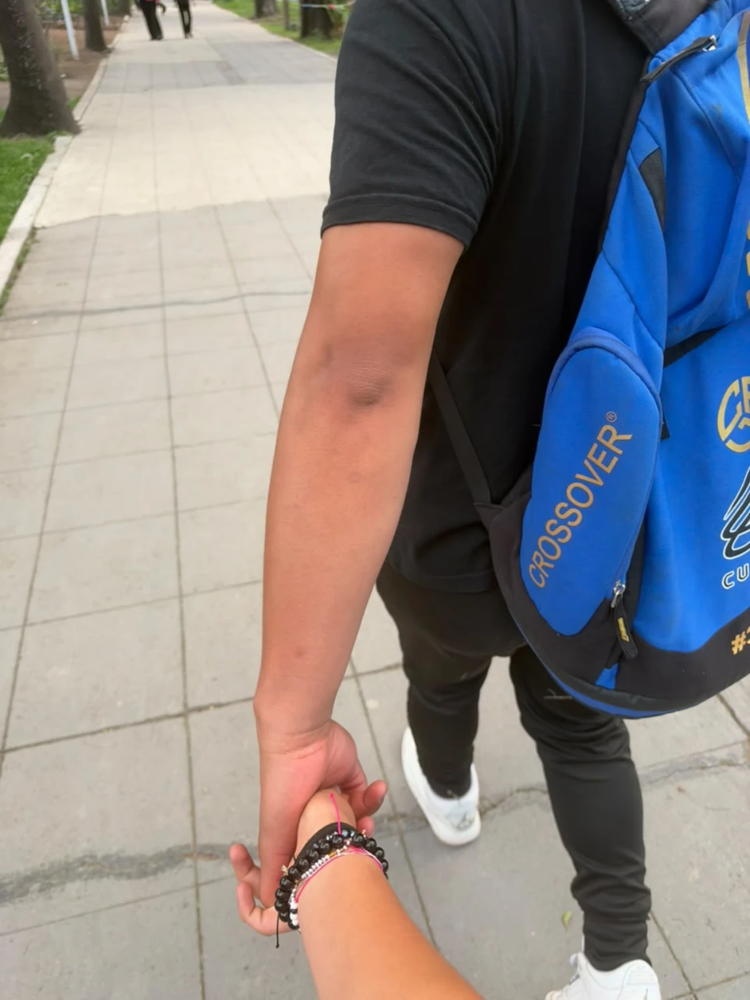
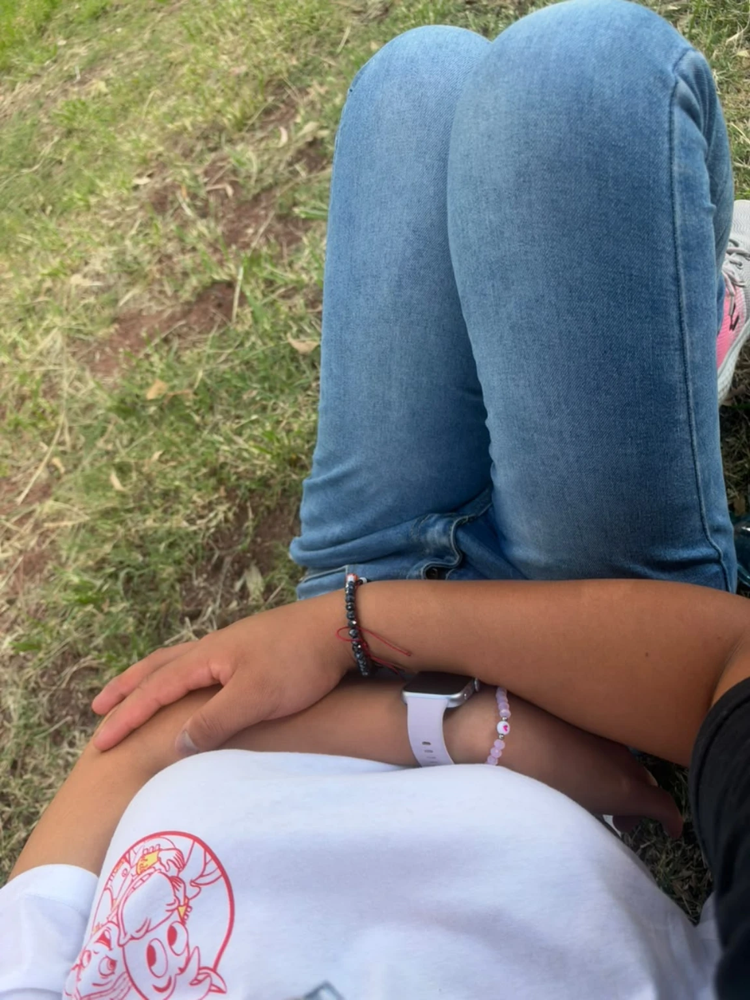

01

UN RECUERDO DE NOSOTROS
Una sonrisa que quiero guardar
De esos momentos sencillos que se vuelven especiales simplemente porque estoy contigo.
23 · 08 · 2026 — PARA SIEMPRE EN NUESTROS RECUERDOS
Carlos ♥ Esther
Tres meses, miles de sonrisas y una historia que apenas comienza.
Un pequeño lugar hecho con mucho amor para ti.
CAPÍTULO UNO
El 23 de agosto de 2026 empezó una aventura que hoy tiene un lugar muy especial en mi corazón. No se trata solamente del tiempo, sino de cada instante que hemos convertido en un recuerdo nuestro.
CADA SEGUNDO CONTIGO CUENTA
NUESTRO CAMINO

De esos momentos sencillos que se vuelven especiales simplemente porque estoy contigo.

Un recuerdo bonito de los muchos lugares y experiencias que todavía nos esperan.

Me encanta descubrir tus gustos, acompañarte y celebrar esas pequeñas cosas que te hacen ser tú.

Hay momentos que no necesitan muchas palabras; basta con estar cerquita y guardar el recuerdo.

Me gusta la idea de seguir descubriendo lugares y caminos contigo, paso a paso.

A veces los recuerdos más bonitos son esos instantes sencillos en los que simplemente estamos juntos.
CAPÍTULO DOS
Toca una fotografía para verla más de cerca.
CAPÍTULO TRES
Porque tienes una manera muy tuya de hacer que un día común se convierta en uno bonito.
Una de esas cosas que podría mirar una y otra vez y que siempre me alegra el corazón.
Porque cada conversación, abrazo y aventura suma algo a esta historia que compartimos.
CAPÍTULO CUATRO · PARA TI, MI NIÑA
Mi niña bonita:
Con todo mi cariño,
Tu Carlos ♥
UNA PEQUEÑA SORPRESA
Preparé una aventura para ti: primero demuestra cuánto recuerdas de nosotros y después desbloquea un reto especial.
Entrar a nuestro mundo de juegos ♥CAPÍTULO CINCO
Por más fotografías, abrazos, risas, lugares nuevos y días en los que sigamos eligiéndonos.
Mi lugar favorito seguirá siendo donde pueda compartir momentos contigo.
Carlos ♥ Esther